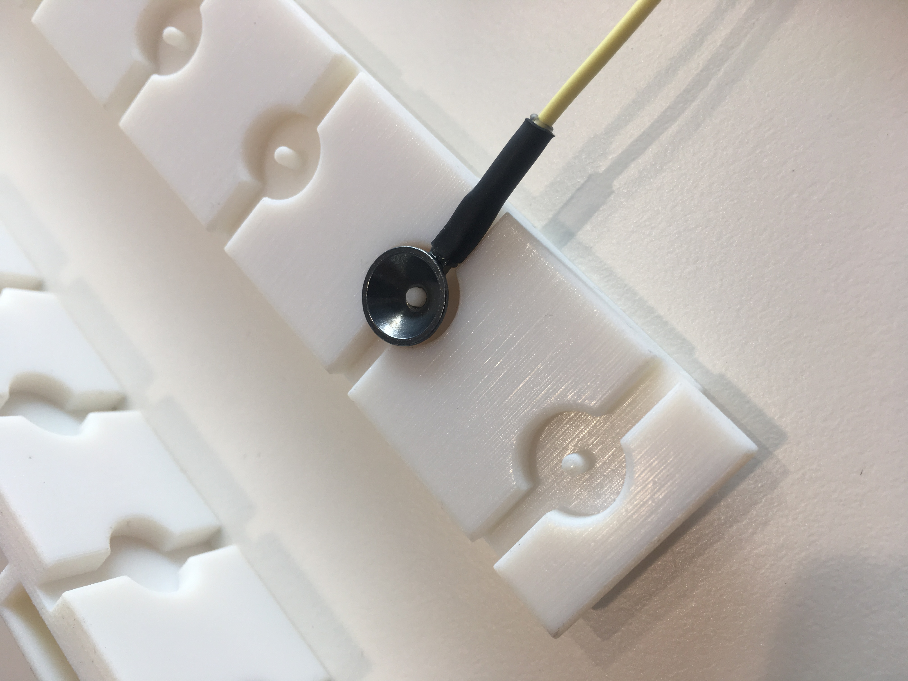

Where are you?
This is an experiment in creating an open kind of thesis. I would like to work together using the nonprofit Hypothes.is toolkit to annotate this living document, for which we’ll track changes using git. In less than two years, this page will represent the culminated collective effort of a few people to better understand the organizing principles of human motor learning.
To start adding comments to this page, just highlight some text, click annotate and start typing. Note that you will have to a Hypothes.is account, but it only takes a second.
What am I doing?
I’m working on my PhD at the Sainsbury Wellcome Centre for Neural Circuits and Behavior in London. I’m setting up a family of experiments that I hope will test hypotheses about the organizing principles of sensorimotor control and learning. I’m setting up a task where I record from participants’ muscles in their arms and hands using electromyography. Subjects’ arms and hands are fixed in a brace, but as they send signals from their brain down to their spinal cords and ultimately to their muscles, my electrodes will sense this change in electrical potential and relay this change to the computer, which will reflect these changes through visuals shown on a screen. The object of the game is for the participant to learn which muscle activations correspond to which changes in the visual scene. You can think about this as a video game you’re playing directly with your muscles.
PhD Timeline
- Year 1 (October 2018 - October 2019)
- coursework (October 2018 - March 2019)
- mouse wheel task in Mrsic-Flogel Lab (Jan 2019 - March 2019)
- ctrl-labs rotation in NYC (April 2019 - June 2019)
- MurrayLab rotation (July 2019 - August 2019)
- Organize SWC PhD Bootcamp (September 2019)
- Year 2 (October 2019 - October 2020)
- list of thesis committee members
- project proposal with literature search
- data club presentation / 6-month review (May)
- SfN poster introducing setup, concept
- final draft of project proposal
- introduction and background chapters
- upgrade / 2nd year review (October)
- preliminary task data
- Year 3 (October 2020 - October 2021)
- finer-grained experiments, supporting experiments
- theory chapter
- modeling chapter
- Year 4 (October 2020 - October 2021)
Purpose
The processes by which biological control solutions spanning large and continuous state spaces are constructed remain relatively unexplored. Future investigations may need to embed rich dynamical interactions between object dynamics and task goals in novel and complex movements.1
We know surprisingly little about how this process unfolds in the brain. So little, in fact, that we haven’t quite figured out what the brain is actually doing. We know that it is involved in these muscle contractions, but what sort of strategy do you use to explore this space of possible mappings between what you experience when you move and what you expect to see and feel as a result? This is the question I hope to make headway on.
To do this, I’ll use the literature of reinforcement learning and optimal control theory to guide my theoretical understanding of what is happening when a subject begins to experience learning in this novel situation. I will model hypotheses of this learning process and compare these models to the large amounts of data my experimental setup will produce as we track learning of subjects over many sessions.
Biological Background
Muscles are collections of fibers that contract when chemical gradients are produced at the neuromuscular junction by action potentials emanating from neurons in the ventral horn of the spinal cord.
Electromyography is the detection of changes in chemical potential using electrodes. In my setup, we use a total 64 monopolar surface electrodes and monopolar needle electrodes to record chemical potentials from muscles in the forearm and hand.
Anatomy of the Hand and Forearm
Motor Units
The motor unit, namely a motoneurone and the many muscle fibres singularly innervated by branches of the motoneurone’s axon, is the quantal element underlying the transduction of neural commands driving the exquisite motor behaviours produced by the hand. (Fuglevand 2011)
Experimental work characterizing motor unit properties in humans and other mammals has been consistent with regard to two findings(see Fuglevandet al.1993). First, twitch or tetanic forces of motor units that constitute a muscle vary over an extremely wide range, usually 100-fold or greater. And second, the frequency distribution of motor units according to force capacity is markedly skewed toward motor units that produce small forces, with few units that generate large forces. (Fuglevand 2011)
One consequence of this organization is that fine resolution of force is an in-built control feature, such that when performing delicate motor tasks involving weak muscle contractions, subtle adjustments in force can be accomplished by drawing upon a large population of weak motor units. (this is logarthmic in the number of units recruited) (Fuglevand 2011)
Motor unit number itself seems to play a critical role in determining precision of muscle force. When human subjects attempt to produce a constant force during isometric contractions, the force inadvertently fluctuates about the specified target level. Such force variability increases in roughly in proportion to the target force(Enoka et al.2003). Unexpectedly, this noise in force control is greater for hand muscles compared to more proximal muscles (Hamilton et al.2004). Furthermore,based on available estimates of motor unit numbers and computer simulation, a key factor underlying greater noisiness in hand muscles was relatively low numbers of motor units (Jones et al.2002; Hamilton et al.2004). In addition, augmented force variability in hand muscles maybe related to greater variability and common modulation in motor unit discharge rate compared to more proximal muscles (Negro et al.2009). Therefore, the widely held view that hand muscles are optimally designed for fine control may require reconsideration. (Fuglevand 2011)
While there are anatomical (Feinsteinet al.1955) and electrophysiological (McComaset al.1971; Bromberg,2007) means to estimate motor unit numbers in humans,both methods are susceptible to several sources of error.Perhaps the most reliable information at present available about relative numbers of motor units supplying different muscles comes from retrograde labelling of motoneurones in non-human primates. In such studies, intrinsic hand muscles have been shown to be innervated by ∼50–200 motoneurones, while more proximal muscles like biceps and triceps brachii are each supplied by more than 1000 motoneurones (Jenny & Inukai, 1983). (Fuglevand 2011)
Kinematics
The human hand has approximately 20 degrees of freedom in its 19 joints, but the number of dominant modes of activity is much lower due to mechanical coupling.
27 bones and 36 muscles (???)
There are 31 muscles of different and often complex architecture involved in hand movement with 19 residing in the hand (the intrinsic hand muscles). The hand has 19 articulations, 18 tendons crossing the wrist, and at least 25 degrees of freedom. (Duinen & Gandevia 2011)
Thumb
The human thumb confers great scope for dexterity and its long length relative to the index gives it the highest ‘opposability index’ among primates (Napier, 1972), while its rotated first metacarpal and unique carpometacarpal joint enhance its range of movement for grasping and manipulation (Wood-Jones, 1949). Furthermore, the thumb is moved by a muscle in the forearm, flexor pollicis longus (FPL), which provides the only way to flex its distal joint and is rudimentary in apes. (Hiske van Duinen and Simon C. Gandevia 2011)
The presence of FPL in humans is associated with a high capacity to s ense thumb voluntary forces at remarkably low levels compared even to intrinsic hand muscles (muscles with their origin and insertion in the hand; Kilbreath & Gandevia, 1993) and to detect length changes at its distal joint (Refshauge et al. 1998). (Hiske van Duinen and Simon C. Gandevia 2011)
Hand
The intrinsic hand muscles can also be activated almost maximally (e.g. Merton, 1954; Herbert & Gandevia, 1996), but they are special in that they can b e ‘controlled’ at very low levels, even below the recruitment threshold for the earliest recruited units (Gandevia & Rothwell, 1987). (Duinen & Gandevia 2011)
Forearm
the deep flexor attaches to the distal phalanx the superficial flexor attaches to the middle phalanx
The main finger extensor, extensor digitorum (ED), when active generates torque about the elbow, wrist, metacarpalphalanegeal, proximal interphalangeal and distal interphalangeal joints simultaneously (Anet al.1981). Moreover, ED, likeits flexor counterparts, flexor digitorum superficialis and flexor digitorum profundus, gives rise to four distal tendons that insert into each of the fingers.Therefore, attempts to move a single finger in isolation require that other muscles be co-activated to counteract the unwanted actions produced by the agonist (Schieber, 1995; Valero-Cuevas, 2000). (Fuglevand 2011)
Three major forearm muscles consist of multiple muscle bellies with tendons to each finger so that the muscles have four ‘compartments’ (Duinen & Gandevia 2011)
Force and displacement interactions can occur within muscles, an issue of particular concern given that flexor digitorum profundus (FDP), flexor digitorum superficialis (FDS) and extensor digitorum (ED) are muscles with tendons to each of the fingers. These interactions may occur, for example, because a motor unit’s territory is such that force is ‘injected’ into more than one distal tendon. This sort of ‘lateral’ force transmission exerted by individual muscle fibres and motor units can be significant in some animal preparations (e.g. Street, 1983; see also Young et al. 2000). The topic of lateral force transmission is controversial but it appears that such an effect can even result in inter-muscle force transfer (e.g. for review Patel & Lieber, 1997; Huijing, 1999, 2009). This process has been most studied in the lower limb for gastrocnemius and soleus in animals (for details see Maas & Sandercock, 2008) but some evidence exists for it in humans (e.g. Bojsen-Moller et al. 2010). However, the unresolved issues are the magnitude of these effects and the conditions under which they are functionally significant. (Duinen & Gandevia 2011)
If hand muscles do not always behave as simple in-line motors, then the spread of their mechanical effects must depend on the links of force–length curve, viscoelastic properties, and the changes induced by muscle contractions. Such detailed biomechanical information is largely lacking. (Duinen & Gandevia 2011)
Spillover has been shown in experiments studying the ‘recruitment thresholds’ (defined below) of motor units ac ting on other digits during single digit contractions (Kilbreath & Gandevia, 1994; Butler et al. 2005; van Duinen et al. 2009). In these experiments, motor units were recorded from one (test) compartment of the respective muscles, while subjects were asked to contract the compartment of the other digits up to 50% of their maximal force. When the subjects contracted these other digits (one by one), motor units of the test compartment were often recruited. The amount of force produced by the other digits at the time of recruitment of the motor unit of the test compartment is termed the recruitment threshold. The general finding for all three muscles was that, the closer the contracting compartment to the test finger, the more motor units were recruited. (Duinen & Gandevia 2011)
One has to ask whether this spillover is functional. Is the frequent recruitment of motor units ac ting on the little finger when we extend the thumb part of a fixed pattern of muscle activation, perhaps to balance forces around the wrist? (Duinen & Gandevia 2011)
Until recently, most studies looked at either flexion or extension, but when we compare the amount of enslavement in flexion and extension, the enslaved forces in extension are higher than in flexion, when recorded in the same apparatus. We hypothesise that the level of enslavement might depend on the amount of individual daily usage (for data on usage see Ingram et al. 2008). (Duinen & Gandevia 2011)
When multiple digits had to contract, the subjects were not able to reach their maximal force, thus showing a force ‘deficit’. These deficits may be comparable to those when trying to produce force with two hands or arms, a phenomenon known as the bilateral deficit (Gandevia, 2001).
Muscle Spindles
Arm movements are sensed via distributed and individually ambiguous activity patterns of muscle spindles,which depend on relative joint configurations rather than the absolute hand position. Interpreting this high dimensional input (around 50 muscles for a human arm) of distributed information at the relevant behavioral level poses a challenging decoding problem for the central nervous system. Proprioceptive information from the receptors undergoes several processing steps before reaching somatosensory cortex (3,8) - from the spindles that synapse in Clarke’s nucleus, to cuneate nucleus, thalamus (3,9), and finally to somatosensory cortex (S1). In cortex, a number of tuning properties have been observed, such as responsiveness to varied combinations of joints and muscle lengths (10,11), sensitivity to different loads and angles (12), and broad and unimodal tuning for movement direction during arm movements (11,13).The proprioceptive information in S1 is then hypothesized to serve as the basis of a wide variety of tasks, via its connections to motor cortex and higher somatosensory processing regions. (Sandbrink & Mathis, 2020)
Corticomotoneuronal Connections
- Subdivisions of primary motor cortex based on cortico-motoneuronal cells (Rathelot, Strick PNAS 2008) https://www.pnas.org/content/106/3/918
x Corticomotoneuronal cells are “functionally tuned” https://www.ncbi.nlm.nih.gov/pmc/articles/PMC4829105/
Although CM synapses exert powerful excitatory effectsonα-motoneurons, the same motoneurons also receivemany other inputs (Fuglevand, 2011), including thosefrom Ia afferents, spinal interneurons, propriospinalneurons, reticulospinal neurons and rubrospinal neurons(Mewes & Cheney, 1991; Flamentet al.1992; Porter& Lemon, 1993; Perlmutteret al.1998; Riddleet al.2009). Any individualα-motoneuron receives thousandsofsynapticcontacts.Thehandfulofsynapticcontactsfroma given CM cell therefore does not consistently drive thedischarge of any particularα-motoneuron. (Schieber 2011)
rathelot, strick?
“Following a century of detailed anatomical tract-tracing, electrophysiological investigation and careful lesion studies, our knowledge of the executive pathways through which ‘commands’ for movement must pass is unrivalled, yet we are still some way from really understanding how a movement is generated, which structures and pathways are involved and how they interact during the period leading up to movement onset.”
The intense, synchronised output generated by electrical stimulation of macaque motor cortex evokes responses in hand and digit muscles with onset latencies of only approximately 10ms. These latencies are much shorter than the 60–100 ms between the onset of changes in M1 activity and the onset of muscle activity during voluntarily generated movements (Cheney and Fetz, 1980; Porter and Lemon, 1993).
The discovery that M1 neurons can become active during observation of the actions of others, but without any overt signs of movement in the observer (Vigneswaran et al., 2013) adds to a long list of evidence that motor cortex can be active in a number of different states, all of which are quite distinct from movement itself (Schieber, 2011). These include preparation for movement (Shenoy et al., 2013), mental rehearsal and imagination (Cisek and Kalaska, 2004; Dushanova and Donoghue, 2010; Macuga and Frey, 2012).
PTNs exhibit additional features that are consistent with a role as ‘command’ neurons. These include the fact that they make many collaterals to important subcortical motor structures, such as the red nucleus and the pontine nuclei (Ugolini and Kuypers, 1986), thereby providing ‘efference copy’ of ‘commands’ to the cerebellum.
A further feature of some primate PTNs is that they make direct cortico-motoneuronal (CM) connections to alpha motoneurons (Porter and Lemon, 1993; Rathelot and Strick, 2006; Zinger et al., 2013), allowing the motor cortex direct access to spinal motoneurons. Of course, the CM system does not act alone, but in parallel with many other local interneuronal mechanisms and other descending pathways (Baker, 2011; Lemon, 2008), seg- mental (Takei and Seki, 2010) and propriospinal systems (Kinoshita et al., 2012). It is interesting that CM synapses on motoneurons are not subject to presynaptic inhibition (Jackson et al., 2006), suggesting that other systems (e.g. peripheral affer- ent inputs from the moving limb) do not use this mechanism to modify CM inputs to motoneurons, which would mean that infor- mation delivered by CM projections is allowed unfettered influ- ence over target motoneurons.
CM cells show changes in activity long before movement onset, far longer than the esti- mated conduction delays: thus CM cells exert their influence long before movement starts, but at a level that is subthreshold for motoneuron activation and subsequent movement.
CM cells are active for a whole range of different limb move- ments, including reach-to-grasp, precision grip and during tool- use by macaques (McKiernan et al., 1998; Muir and Lemon, 1983; Quallo et al., 2012). CM connections are particularly well- developed in primates with a high level of dexterity and who use tools. Interestingly, CM cells are characterised by showing not only increases, but also decreases in activity before and during precision movements (Maier et al., 1993; Quallo et al., 2012). Indeed, one way that M1 appears to control the pattern of muscle activity during grasp is to ‘disfacilitate’ the excitatory drive to motoneurons. (Lemon Kraskov 2019)
The primate corticospinal tract shows many interesting features that distinguish it rather sharply from the rodent pathway. These include the size and dis- tribution of fibres within the tract, with a small but probably very significant population of fast-conducting axons (Firmin et al., 2014).
There are very few tasks dealing with the hand in particular. What type of task would test the hypothesis that CM connections act to fractionate synergies of the hand such that we can tune a parameter of the task to require more or less influence of these direct connections? We would like to ask a user to fractionate synergies of the hand to different levels.
This requires first mapping the intrinsic available dynamics of the hand per user.
We then would like to present fixed mappings between hand output (either through direct muscle activity or through a controller such as a force pad).
There is work suggesting that CM connections synapse primarily on low threshold motor units that are recruited first. This would imply a difference in synergy fractionation at lower force as opposed to higher force. This can be tested by adding a force parameter within a task.
This hunch was bolstered specifically by the work of Takei et al. in their 2017 PNAS paper:
It is generally believed that the direct corticomotoneuronal (CM) pathway, which is a phylogenetically newer pathway in higher primates, plays a critical role in the fractionation of muscle ac- tivity during dexterous hand movements. However, the present study demonstrated that PreM-INs, which are phylogenetically older, have spatiotemporal properties that correlate with muscle synergies during voluntary hand movements. Therefore, it is likely that these two systems have specialized functions for the control of primate hand movements, namely “fractionated control” and “synergistic control,” respectively. The interaction of these two putative control systems might be the source of the exceptional versatility of primate hand move- ments. For example, a power grip (e.g., gripping a hammer) is characterized by the predominant coactivation of hand muscles. It is known that power grip requires less involvement of the CM system, and therefore might result more from the PreM-IN system. Conversely, fine control of individual finger movements (e.g., control of a fingertip force of a single digit) requires higher fractionation of individual muscles and probably depends more on the CM system. Indeed, muscle synergies are not active during fine individual finger movements in some cases. Precision grip requires the fractionation of hand muscles as well as their coactivation, and thus might depend on cooperation of both the CM and PreM-IN systems. These examples suggest that the optimal balance of the two control systems may vary according to task requirements. Optimization of balanced control may be an important factor also for the acquisition of new motor skills. For example, Berger et al. demonstrated that learning a new movement that is compatible with existing muscle synergies occurs much more quickly than learning a movement requiring new muscle synergies. This implies that establishing, modifying, or masking muscle synergies requires more training. This might explain our everyday experience that highly fractionated movements require extensive practice (e.g., using chopsticks requires more extensive training than using spoons). This conceptual framework of balanced control systems may help future studies to clarify how our nervous system controls and acquires versatile hand functions.2
This notion of an “old” and “new” motor cortex is not conceptual, but has been shown using viral tracing techniques.3
As I see it, the goal is to build a falsifiable model which takes into account the bipartite structure of M1 into account, and find tasks that ostensibly require the direct descending connections to fractionate learned synergies. In effect, the hypothesis to test is that CM connections override the “consolidated” patterns putatively generated via spinal circuitry.
Thus, this is a learning question, an experimental problem, and a modeling task rolled into one. We have a good hunch that is backed up by solid work. The question comes down to how much we can learn by recording as much muscle activity as we can and designing very clever tasks to test very clever models.
Porter & Lemon
It is clear that humans have the capacity to learn single motor unit (SMU) activation of the digits. Given what we know about voluntary movement and human digit control it is likely that this activation is under motor cortical control. This ability is somewhat surprising for two reasons:
- Individual corticomotoneurons contact multiple motor pools, and rarely (if ever) individual motor neurons.
- There is no physiological reason for the nervous system to have the ability to control individual muscles. The CNS (motor cortex in particular) is more likely to generate “complex” movements requiring simultaneous control of multiple synergistic muscle groups.
Given the fact that most CM cells appear to facilitate activity in several muscles, inhibition would appear to be essential for the recruitment of an individual muscle without any concurrent activity in its functional or anatomical synergists. But how is this inhibition recruited and maintained during and after learning?
I see two opportunities with this project. The first is practical: if we can generate definitive experimental evidence and a working theory for what is involved in voluntary control of single MUs in the forearm, we can build a ground-truth dataset for spike waveforms of various muscles under various conditions. The second is experimental: we can manipulate pertinent types of sensory feedback with the goal of answering interesting questions about the interplay between proprioception, agonist-antagonist interaction, and Renshaw cell functionality while building an understanding of how dynamics can be shifted for voluntary action to reverse engineer a learning process from the cellular level.
I’ve written below a little more background and detail on what I am thinking about, and would welcome your feedback and critique.
insights from studying the corticospinal tract
The brain seems a thoroughfare for nerve-action passing on its way to the motor animal. It has been remarked that Life’s aim is an act, not a thought. Today the dictum must be modified to admit that, often, to refrain from an act is no less an act than to commit one, because inhibition is co-equally with excitation a nervous activity. (Sherrington, Rede Lecture, 1933)
Since we’re working with a voluntary movement ostensibly of the digits, we know that we’re going to be dealing with the corticospinal tract. I discovered a book called The Corticospinal Tract and Voluntary Movement by Porter and Lemon (1995) – it’s awesome. I highly recommend it, especially Chapter 4. The book focuses mainly on the hand, and Roger Lemon seems to be a living legend.
The key insights from P&L:
The spinal cord’s neuronal organization is based on relatively rigid muscular synergies, and a mechanism to fractionate this is of particular importance for the muscles of the hands and digits which may need to be employed in a variety of flexible associations during voluntary movements.
[Obviously] the structure of corticospinal connectivity places a constraint on the number of possible output arrangements that can be employed by the cortex…
We can conclude that the fundamental organizing principle of the cortico-motoneuronal output is one of influence over activity in multiple muscles.
[Fetz 1980] found that 67 percent of their corticomotoneuronal cells contacted more than 2 of the 5–6 different muscles sampled, and that the mean number of muscles facilitated per cortico-motoneuronal cell was 2.4. […] The majority of CM neurones (59 per cent) produced pure facilitation of either an agonist or antagonist, and cofacilitation of both was extremely rare. The second most common pattern (30 percent of CM cells) was facilitation of agonists and postspike suppression of antagonists.
Findings suggest that CM cell axons branch to innervate many (if not all) motor units within the motor nucleus of its target muscle.
The widespread synaptic impacts made within the motor nucleus of a single muscle would allow a single CM cell to exert a facilitatory influence over many different motoneurones, and therefore to contribute to motoneuronal activity over a range of EMG and force levels. A similar distributed system of synaptic connections has also been observed for muscle spindle afferents (Mendell and Hennemann 1971).
There are a large number of possible sources of common input to spinal motoneurones, including segmental afferent inputs from muscle spindles and other peripheral receptors. However, several lines of evidence suggest that, at least for hand muscle motoneurones, much of the short-term synchrony has a corticospinal origin.
Both refined histological and electro-anatomical observations on single corticomotoneuronal fibres in the monkey indicate significant divergence of the intraspinal collaterals of these fibres to impact on a large number of motoneurones. It is possible that, for some muscles acting about the distal joints of the limb, most or all of the motoneurones are engaged by synapses from each cortico-motoneuronal fibre which includes that muscle within its muscle field. The synaptic boutons that generate the cortico-motoneuronal synapses are small in size and only one or a few boutons are contributed to the motoneuron’s dendritic surface by each cortico-motoneuronal collateral. The contribution to the synaptic excitation of a motoneurone that is made by any one cortico- motoneuronal fibre is small. However, because of the high degree of convergence of intraspinal collaterals from a large colony of cortico-motoneuronal neurones on to each motoneurone of a distally acting muscle, this synaptic influence could allow fine grading of the depolarization of the motoneurone, contribute to the selective activation of motor units during voluntary movement and be critically effective in the fractionation of muscle usage during different motor tasks.
other literature (work on the extensor digitorum communis)
Things we still don’t fully know (that are probably beyond the scope of this project):
- How extensive is the CM projection?
- How many CM cells project to a given motoneuron or to a given muscle?
- how large are the postsynaptic CM effects in a given motoneuron? [Lemon 2008]
Renshaw cells might play a role in isolating single MUs:
It is concluded that Renshaw cells de-correlate discharge patterns of different motoneurones of the same pool by injecting uncorrelated signals into them. This decorrelation is an important prerequisite for distortion suppression of signal transmission in a multi-channel system, like that of stretch reflex, and for its linearization. [Adam 1978]
Another report that people don’t know how they’re learning to isolate SMUs:
Although subjects used auditory synchrony feedback, they were generally unable to evaluate their success in modulating the amount of MU synchrony; nor could they describe any conscious strategy used during the successful sessions. They concentrated on the
occurrence of the synchrony pulses, rather than on the amount of EDC contraction or the concurrent force output. [Schmeid, 1993]
Implications that CM cells are responsible for fast changes in MU dynamics:
The present changes in short-term synchronization were detected in the course of the conditioning session and must reflect rapid alterations in the relative contributions of common inputs. One direct mechanism would involve a change in the proportion of descending monosynaptic input, such as the corticomotoneuronal cells that strongly affect EDC motoneurons (Phillips and Porter 1977; Fetz and Cheney 1980). [Schmeid, 1993]
Statement of unknowns about how dynamics are shifted at the MU level in terms of spinal circuitry:
Indirect control of MU synchronization might also be mediated by supraspinal modulation of the Renshaw decorrelating action (Gelfand et al. 1963; Adam et al. 1978), or by enhanced activity of spindle afferents via selective activation of gamma-motoneurons (Rudomin 1989). These possibilities suggest further experiments to resolve the neural mechanisms by which humans could rapidly alter short-term synchrony of MUs and, by implication, control the proportion of last-order common inputs to motoneurons. [Schmeid, 1993]
Theory Background
Task Formalization
In this task, the subject’s first goal is to interact through an unknown visuomotor mapping and internalize this model. The second problem is to use this model to solve a control problem.
- System Identification – learning a transition function
- How do you learn the unknown observation model from data?
- Policy Optimization
- Once dynamics are learned (or at least stable?), how do we form a policy that is generalizable to new tasks under these dynamics?
- This is the control problem.
It’s safe to assume that these processes are happening in parallel. Because we have complete and arbitrary control over the observation mapping, we can ask the subject to interact through a dynamic that is intuitive (informative prior) or unintuitive (uninformative or inhibitive prior). Each scenario, we hypothesize, will elicit different strategies for learning and control.
The unknown mapping from muscle to task space looks like the observation matrix in the LQG problem:
The state dynamics in the task are of the form:
where is a diagonal decay matrix of with terms and is the identity. The subject produces muscle contractions which add to the current latent (unobserved) state. In the absence of control signals, the state decays back to in line with the physics of your arm returning to a passive state in the absence of muscle contractions. The terms and are gaussian noise vectors with distributions and . If we combine the transition and observation models:
We can think of this as the combined system identification problem where and are unknown and must be estimated. The noise covariances of this altered system are now non-trivial, however. We could also assume that the transition dynamic is known and that the identification problem is learning the mapping only. This might not be a poor assumption since the exponential decay is meant to serve as an intuitive passive dynamic.
In each trial of the task, a subject will have some internal representation of the observation dynamic which may or may not be accurate. In order to make accurate predictions, must be estimated.
Learning linear dynamical systems from data is a hot topic of research, most of which seems to focus on learning in the context of complete state observation (, ). Algorithms to determine parameters of and are proposed (see Dean, Recht 2018).
From LQG theory we know that the control law is a linear function of the state:
and thus our combined system dynamic is:
The noise covariance due to the observation Q is unchanged, but the new noise covariance for the latent process is now . This may make things difficult.
Questions
- In a behavioral experiment, how can you disentangle system identification/estimation and control? Is suboptimality due to one or the other?
- How does the observation mapping relate to the latent state covariance? The task state covariance?
- How do we formalize this into a probabilistic graphical model? Why would we?
- Would this make it easier to reason about what the goals are?
- Would learning become an inference problem?
- Would solving the control problem become an inference problem…?
- What noise assumptions can we make? Can we not make?
- How can we incorporate signal-dependent noise?
Model-based Reinforcement Learning
Since we only have an approximate model of the system dynamic, we could simply work towards an optimal policy directly using gradient derivative-free optimization methods in a model-free approach. Since we have good evidence that humans leverage internal models to make decisions (at least in a motor problem domain), we need to define an algorithm which uses past observations and controls to update our approximation for the system dynamic. Here is a very general algorithm:
- Define a base policy/controller and base system model ( and )
- Collect samples (by interacting with the true environment ) using the current policy/controller (collect triples using for
- Use sample(s) / trajectories to update current system dynamical model
- Update current policy/controller (using the system dynamics or using a direct policy method)
If the true system dynamics were known, we could solve the Algebraic Riccati Equation with a backwards pass, and compute our controls in a forward pass. This general algorithm structure highlights how the (unknown) system identification and controller design are intertwined: identifying a system appropriately must rely on sampling and fitting regions of the state space pertinent to adequate control in terms of cost (Ross ICML 2012). Otherwise, our approximation to the true system dynamic will only produce a valid controller in regions we have previously explored. The question is how we can effectively (sample and time efficiently) utilize new state transitions we encounter either online as feedback or between trials to update our model and policy. That is, the number of trials and/or trajectories to use before updating either the system model and/or policy is an important parameter.
In the LQG setting, this might be called “adaptive LQG”.
Questions
- how does a subject sample the state space as to efficiently learn? do they sample optimally? how does controller/policy optimization proceed based on system identification?
- how does a human subject use error information from each trial and feedback from each time step to update their model and/or policy?
- how does a subject balance policy updates with model updates?
- On what scale (trials, timesteps) is the model altered? the policy?
- Replanning at every timestep is a model predictive control algorithm
- What prediction can we make for ID/learning every trial?
- how does a subject avoid “distribution mismatch” between their base policy and their optimal policy? How do they efficiently explore and use this new data to update their internal model?
- what exploration strategy does a subject use to avoid mismatch?
- what
- What is a subject’s baseline/prior model? or
- What is the base policy / prior policy?
- How do we think about learning a distribution over trajectories in control law space, or perhaps equivalently, in covariance/precision space?
- We might hypothesize that a subject will act as randomly as possible while minimizing cost, a maximum entropy solution that converges to an optimal controller?
- How does a subject penalize changes to their controllers? Do they follow a KL-divergence type of measurement when improving their policy?
Motor Adaptation
Implicit / Explicit Model-based / Model-free Slow / Fast
Krakauer et al.’s categorization of motor learning places prior work into the following classes: - Adaptation - Sequence Learning - De Novo Learning - Motor Acuity - Expertise
work in reaching
shadmehr, krakaur reviews
State-space Models of Motor Adaptation
Modeling Sensorimotor Learning with Linear Dynamical Systems by Cheng and Sabes, 2006. The goal is to model trial-by-trial learning by fitting data to a linear dynamical system model. Here we’ll call the sensorimotor mapping transforming inputs to outputs per trial:
This can be thought of as a mapping from inputs within a single trial to, for example, endpoint error. Noise is captured by the . The trajectory in space attempts to capture the process of learning. The learning rule can be written
where is the history of the mapping, is the history of the total inputs to learning which could encompass , , and exogenous inputs . Noise in the learning is captured by .
We can approximate this learning problem using linear equations by assuming that is stationary, is parameterized by . Thus,
The trial-to-trial input-output mapping is now fixed, and is transformed by trial through its parameters by . Note that both mappings are Markovian and there are two input vectors, one for within-trial and one between-trial. These can include overlap. We can now linearize these mappings around an equilibrium point:
As shown by Cheng and Sabes, we can bundle the equilibrium terms into a bias term and drop this term if we mean-subtract our data () when it’s time to fit. This gives us a simple linear dynamical system:
The first equation governs the evolution of parameters of the within-trial input-output mapping, while the second equation governs the trial output given the current within-trial mapping parameters and learning inputs . The parameters are hidden variables that are only observed through the output . The noise terms and are normally distributed with covariances and , respectively. governs the passive trajectory of . If , does not decay passively.
There is a general form for this model which separates endogenous input from exogenous input
where governs biases in directions of the outputs. A unbiased output is isotropic. To add explicit stationary bias we write
Example Models
Feedback Error Learning
The second term is simply the difference between the output and the desired output .
Prediction Error Learning
Let where , the difference between the output and the predicted output such that
. Thus, is a kind of forward model. Plugging in,
becomes
Target Prediction Error Learning
Now let , the difference between predicted output and target output.
Steady State
If we take the output and state vectors in expectation for constant inputs and , we have
Thus, the eigenvalues of must be less than or equal to 1 for to be stable in expectation.
Critique
It should be emphasized, however, that these models are not intended to provide a mechanistic explanation of adaptation—they do not explain why adaptation has the properties it does. They explain neither why compensation for a perturbation decays, nor why people learn at the rate they do. However, these models do encapsulate a set of simple assumptions about how learning might occur on a single-trial timescale, and allow us to predict behavior in response to sustained or fluctuating perturbations over many trials. (Krakauer)
[Bayesian theories of learning] hold that adaptation is essentially a problem of estimating the properties of the imposed perturbation, given uncertainty about sensory feedback and the state of the world. Mathematically, under certain assumptions (that the noise/variability is Gaussian in both cases), this Bayesian estimation framework becomes equivalent to a Kalman filter (219)—a common algorithm for optimally tracking dynamic states under noisy observations— which is almost identical to a state-space model. (Krakauer)
Two-rate models
where we fit , the learning rate and retention parameters. (shadmehr 2006)
Observations have revealed that there is far more to how participants compensate for an imposed perturbation than just implicit recalibration of a pre-existing motor controller. Instead, multiple, qualitatively different processes occur during adaptation tasks; for example, processes driven by explicit, cognitive strategies. When it comes to studying implicit recalibration, these other processes can be a contaminant. At the same time, however, these additional processes likely reflect the involvement of similar mechanisms to those responsible for more general motor skill learning. (Krakauer 2019 Motor Learning Review)
it is unlikely that the underlying components that contribute to learning in adaptation paradigms only differ in terms of their learning and retention rates, as the two- state model suggests. The multiple components of learning instead correspond to entirely distinct learning processes that are simultaneously brought to bear on the same problem. (Krakauer 2019 Motor Learning Review)
Unsupervised Feature Extraction
We want to determine a redundant control space from data taken during natural activity. The difficulty with this is that such a natural activity manifold may display spatial (channel-wise) correlations that are possibly physiologically separable. Thus, there are two aims which must be addressed separately:
- Expore subjects’ ability to decorrelate descending output to the muscles which have been shown to be correlated in a natural activity dataset.
- Such a structured exploration might provide support for the hypothesis that “synergies” are flexible correlations between muscles driven by task demands rather than (or in addition to) physiological structure. This needs to be done incredibly carefully to escape criticism of hard-wired synergy enthusiasts.
- See de Rugy 2012 for a critique of OFC and hard-wired synergies
- Use common correlated outputs to develop a family of BMI-type learning tasks as a proxy for a “novel skill”, then track motor planning of this new skill to compare with motor planning algorithms.
- We might be able to get #1 for free by going after this goal if we’re careful in the setup
- This is arguably a more impactful focus as it connects low-level motor hierarchy data (EMG) to high-level planning with a normative hypothesis.
Electrode data from a single trial of a single session is held in a data matrix (n_electrodes, n_samples), and we wish to find a latent weight matrix (n_electrodes, n_components) which reconstructs by projecting latent trajectories (n_components, n_samples) into electrode space:
is the activity of the latent processes, and is there mixing matrix. The columns of are the principal vectors spanning the latent subspace in electrode space. If we have new samples, we can project these new points onto this subspace:
To justify this decomposition, we have to make some assumptions about the nature of the EMG signal, namely that the signal is linear instantaneous (each EMG sample can be instantly mapped to control space). The other assumption is that the basis should be orthonormal, that the columns of are orthogonal with unity norm. This ensures that the left inverse is equal to the transpose such that:
See Muceli 2014 for use of the Moore-Penrose pseudoinverse in place of the transpose when the columns of do not form an orthonormal basis. This would be the case for NMF. Is there a factorization that produces nonnegative, orthogonal coordinates? Or is the pseudoinverse okay? I will need to test this.
Stated in an information theoretic way, we want to minimize the reconstruction loss for our derived encoder-decoder pair (,). We’re decoding high dimensional activity into its latent dimensions, and encoding back into the high dimensional space. :
This way, forget about orthonormality and solve for an encoder and decoder directly. That is, is perfectly acceptable.
Each row of might be called a spatial filter, a linear combination of electrode activities into a surrogate, hopefully more intuitive space.
In general to find such a basis we must :
- Extract “natural activity manifold” from freeform data
- Use features of this natural subspace to derive control mapping
- Linear iid features:
- PCA
- dPCA
- NMF
- ICA
- Linear time-dependent features:
- SSA
- LDS model / PGM
- Nonlinear
- autoencoders
- networks
- Linear iid features:
The behaviors present in our calibration dataset are crucial, as they determine the spatial correlations used to generate the mapping. If only complex, multi-muscle movements are present in the calibration, it will be impossible to decode subtle movements involving few muscles. Additionally, because extraction is unsupervised, it will be impossible to know how to alter the control basis directions (if we wish to do so) such that they involve single muscles or the smallest sets of muscles.
Ultimately, we want to find reproducible features in our data that are due to muscle coordination alone, rather than volitional movements. We want the lowest level covariance that reflects physiology rather than a task-level behavioral description (see Todorov, Ghahramani 2005 and Ingram, Wolpert 2009). The idea is that if we collect data from enough tasks, we can extract the common modes of muscle activity. This is true only if we are sampling uniformly from the space of tasks. Otherwise one task, and therefore one coordination pattern, will be overrepresented.
Policy Gradient
The Reward Hypothesis: That all of what we mean by goals and purposes can be well thought of as the maximization of the expected value of the cumulative sum of a received scalar signal (called reward).
As an RL practitioner and researcher, one’s job is to find the right set of rewards for a given problem known as reward shaping.
Reinforcement Learning Objective: Maximize the “expected” reward following a parametrized policy.
This is the policy gradient objective, the future expected return in an episode of time steps . The factor is a discount, or for discounted and average reward objectives, respectively. This is the expectation over the roll-outs / trajectories governed by the current policy. Thus it is “on-policy”.
The general (episodic) gradient update
The policy parameter gradient update step:
We don’t know the -value weighting, but we can approximate it with . Subtracting V(s) from Q(s, a), we get the advantage function A(s, a) which removes common value between actions. This is a specific form of the baseline in REINFORCE. The log-derivative is due to
Problems with Policy Gradient
- by definition on-policy (need to forget data very fast in order to avoid the introduction of a bias to the gradient estimator); not sample efficient
- only converge to a local maximum of which there may be many
- requires considerable knowledge about the system one wants to control to make reasonable policy definitions
- always requires a free learning rate parameter
Jan Peters (2010), Scholarpedia, 5(11):3698.
Experimental Setup
Hardware
There are two streams in the setup’s hardware: 1. Electrode to Computer 2. Everything else
The first stream handles the motion of electrodes perturbed by the electric field created due to synapses at the muscle and captured by the sensor circuit. The second stream handles the mechanical constraints around the subject’s arm and hand during data acquisition. This second stream fixes the arm and hand in place in order to limit data to isometric contractions.
Electrode Hardware

Fixture Hardware
Bibliography
1. McNamee, D. & Wolpert, D. M. Internal Models in Biological Control. Annual Review of Control, Robotics, and Autonomous Systems 2, 339–364 (2019).
2. Takei, T., Confais, J., Tomatsu, S., Oya, T. & Seki, K. Neural basis for hand muscle synergies in the primate spinal cord. Proceedings of the National Academy of Sciences 114, 8643–8648 (2017).
3. Rathelot, J.-A. & Strick, P. L. Subdivisions of primary motor cortex based on cortico-motoneuronal cells. Proceedings of the National Academy of Sciences 106, 918–923 (2009).